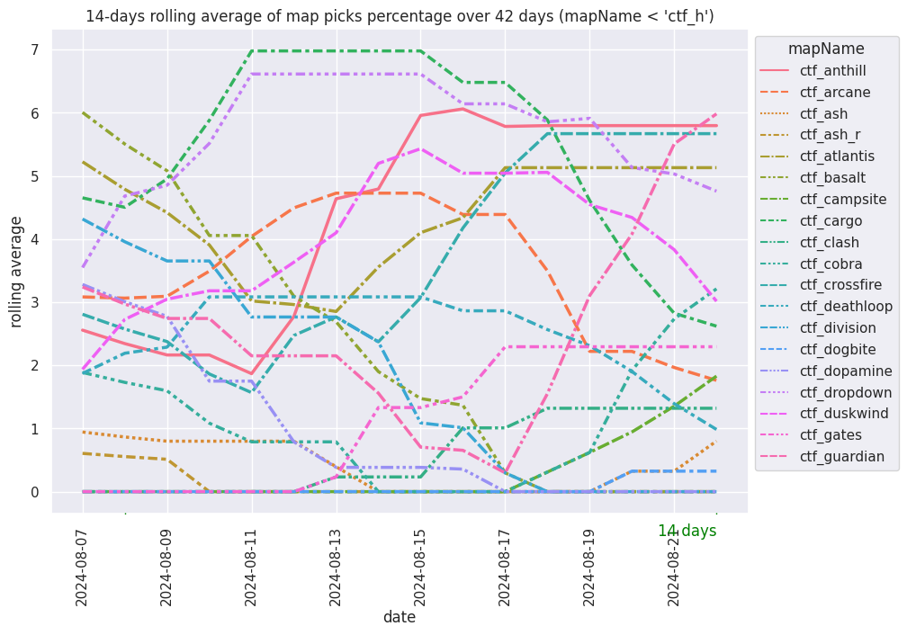
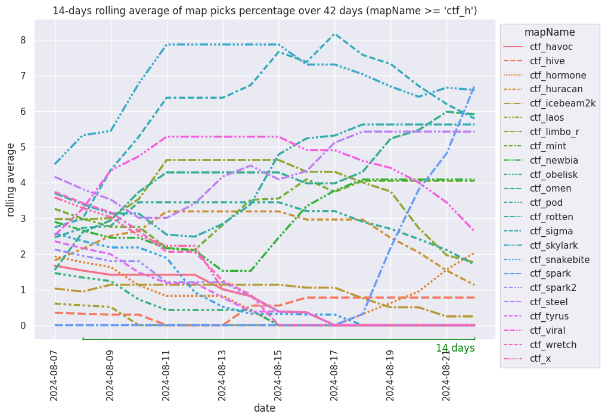

Map picking trends
Data summary
| First game | 2022-12-14 |
| Last game | 2023-02-04 |
| Games total | 674 |
| Rounds total | 1711 |
| Games in playlist `CTF-Standard-2` | 20 |
| Games in playlist `CTF-Standard-4` | 23 |
| Games in playlist `CTF-Standard-6` | 625 |
| Games in playlist `CTF-Standard-8` | 2 |
| Games in playlist `CTF-Test-2` | 4 |
| playlistCode | games_count | |
|---|---|---|
| 0 | CTF-Standard-2 | 20 |
| 1 | CTF-Standard-4 | 23 |
| 2 | CTF-Standard-6 | 625 |
| 3 | CTF-Standard-8 | 2 |
| 4 | CTF-Test-2 | 4 |
Map picking trends
Chart data: csv

Chart data: csv

Maps not played in last 7 days
| mapName | last_played | |
|---|---|---|
| 0 | dm_arena | 2022-12-27 |